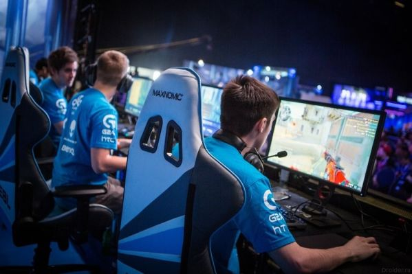
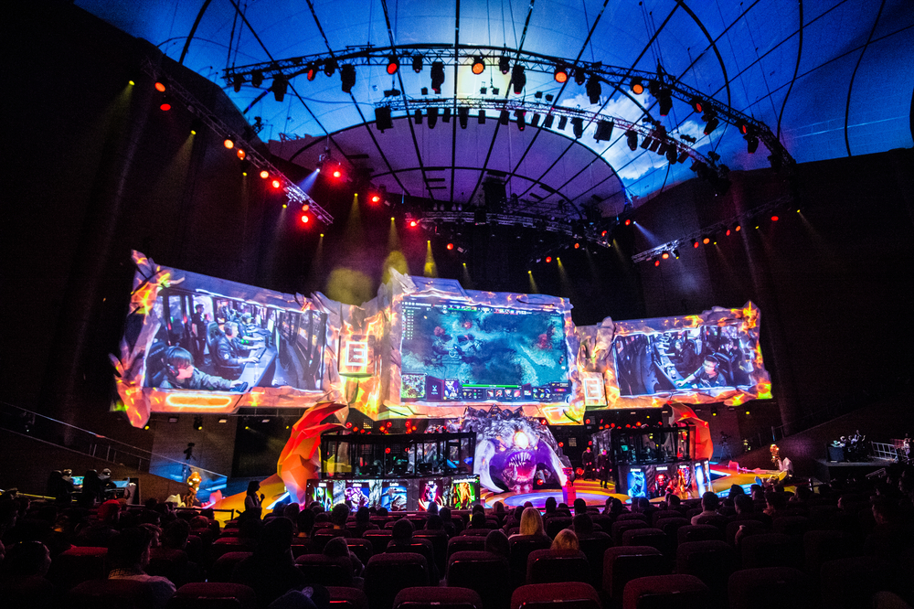

Киберспорт - вид соревновательной деятельности и специальной практики подготовки к соревнованиям на основе видеоигр, где игра предоставляет среду взаимодействия объектов управления, обеспечивая равные условия состязаний человека с человеком или команды с командой
Все киберспортивные дисциплины делятся на несколько основных классов, различаемых свойствами пространств, моделей, игровой задачей и развиваемыми игровыми навыками киберспортсменов: шутеры от первого лица, стратегии реального времени, авто- и авиа-симуляторы, командные ролевые игры с элементами тактико-стратегической игры и т. д.
Разыгрываемые призовые фонды могут достигать нескольких миллионов долларов США. Турнир по Dota 2 «The International» несколько раз бил рекорды по выплатам: так в 2016 году было разыграно 20,77 млн долларов, в 2017 — 24,79.
Игры турниров транслируются в прямом эфире в интернете, собирая многомиллионную аудиторию. Например, за финалом The International 2015, согласно данным с TrackDota.com, наблюдало более 4,6 млн зрителей. В 2017 году аудитория эспортов достигнет в общей сложности примерно 385 миллионов человек во всем мире.
История - киберспорта начинается с 1997 года, когда был основан CPL, которая сделала первый турнир в дисциплине Quake. Но первой игрой с возможностью кооперативной схватки была Doom .
Соревнования - по киберспорту проводятся по всему миру, в том числе и международные. Наиболее значимым и аналогом Олимпийских игр являлся международный турнир World Cyber Games (WCG), который проводился в различных странах с 2000 по 2013 год. Кроме WCG регулярно проводятся Cyberathlete Professional League и Electronic Sports League. На сегодняшний день самыми крупными и престижными соревнования являются те, которые проводят сами производители игр: например, турнир The International по Dota 2 или Чемпионат мира по League of Legends. Помимо соревнований с призовым фондом существует ряд полупрофессиональных лиг, организующих соревнования в форме онлайн кубков и ладдеров. К наиболее известным и массовым относятся ClanBase, ESL и др.
© Ершов Слава , Хвалимов Максим 2018